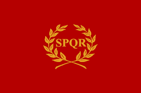
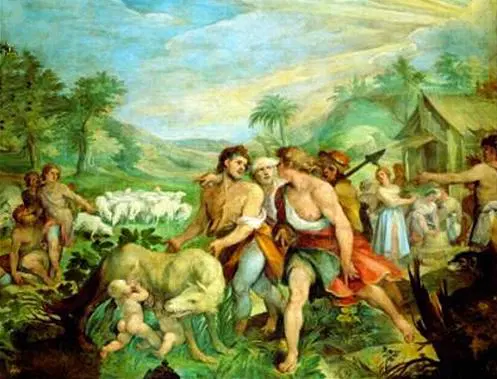
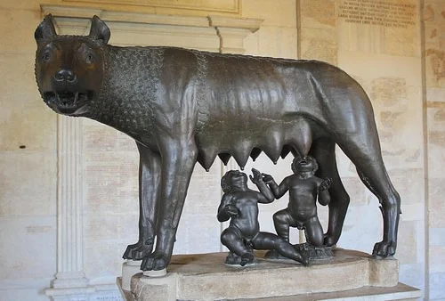
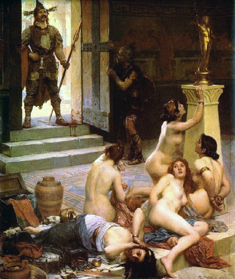

Las siglas latinas SPQR (Senatus Populusque Romanus) representaban la esencia del máximo poder en Roma; el pueblo y el senado. Veinticuatro siglos después de su creación, el lema sigue estando presente en el escudo de la ciudad eterna.

Capitulo I Romulo y Remo
El origen de la leyenda de Rómulo y Remo está en la ciudad latina de Alba Longa, gobernada por el rey Numitor. El rey fue derrocado por su hermano, Amulio, el cual asesinó a todos los hijos varones de Numitor, dejando tan solo con vida a la hija de Numitor.Su hija, llamada Rea Silvia, fue obligada a convertirse en una vestal, una especie de sacerdotisa romana que debía permanecer virgen. Pero el plan de Amulio fracasó, ya que Rea Silvia enamoró al dios de la Guerra, Marte, y juntos tuvieron dos hijos, llamados Rómulo y Remo.
Al conocer Amulio el nacimiento de los dos niños ordenó asesinarlos, pero el encargado no fue capaz de matar a dos niños y los dejó abandonados en el río Tiber. La corriente los desplazó hasta un lugar entre colinas, y allí fueron encontrados por la loba Luperca, quien les cuido y alimento durante años. Más tarde, fueron encontrados por el pastor Fáustulo, quien crió en secreto a Rómulo y Remo.Al crecer se les contó la verdad de su nacimiento, por lo que ambos hermanos buscaron venganza. Ambos marcharon a Alba Longa, asesinaron a Amulio y volvieron a colocar en el trono a su abuelo, Numitor.Romulo y Remo tenian la idea de fundar una ciudad sobre la que poder gobernar. Rómulo quería fundar Roma en el Monte Palatino y Remo quería fundar Remoria en el Aventino. Ambos eran de la misma edad, por lo que ninguno tenía supremacía sobre el otro para reinar, así que hicieron un juego para elegir quien gobernaría, el cual consistía en ver más buitres que el otro. Siendo el ganador Rómulo.Rómulo trazó unas líneas para marcar los límites de la ciudad de Roma ordenando que nadie los podía cruzar, pero Remo decidió cruzar las líneas, desafiando a su hermano. Esto provocó una pelea en la que Remo sufrió heridas y murió no mucho después. Rómulo enterró a su hermano en Aventino, y fundó Roma, siendo la fecha de fundación el 21 de abril del 753 a.C.


Capitulo II Saqueo a Roma
Según la tradición, una banda de galos derrotaron a un ejército romano en la batalla de Alia (390 a.C.), un río cercano a Roma. Al parecer, la victoria de los galos fue tan contundente que no tuvieron ningún problema en proseguir su marcha hasta llegar a la propia Roma y saquearla. Fruto de esa destrucción surgieron diversos relatos que cuentan los horrores cometidos por los bárbaros galos y las acciones heroicas emprendidas por algunos ciudadanos romanos. Por otro lado, muchos aristócratas ancianos habrían decidido hacer frente a los galos y quedarse sentados en su casa, siendo masacrados después de haber sido confundidos con estatuas.Respecto al final de esta invasión de los galos, la tradición histórica aporta dos versiones. En una de ellas encontramos de nuevo a Marco Furio Camilo, el héroe de Veyes, que consigue que los galos abandonen la ciudad sin necesidad de pagarles ningún rescate y sin que los propios romanos abandonaran en masa la urbe. En la otra versión, más cercana a la realidad, los galos solo se marchan de la ciudad al haber sido sobornados con un cuantioso rescate.

Capitulo III la conquista de Italia
El primer período de expansión de Roma incluyó más de 200 años de guerra constante.
Durante este tiempo, Roma tomó gradualmente el control de toda la península italiana,derrotando a Samnitas, Etruscos y a Pirro de Epiro.
Capitulo IV La primera y segunda Guerra Punica
Se conoce como las Guerras Púnicas a una serie de tres conflictos bélicos que enfrentaron a la República de Roma y el Imperio de Cartago. Su nombre provino del término que los romanos empleaban para referirse a los cartagineses y sus antecesores fenicios: punici, así que los propios cartagineses se refirieron a este conflicto como las “guerras romanas”. Estos enfrentamientos ocurrieron entre los años 246 a. C. y 146 a. C., cuando Roma y Cartago eran las dos principales potencias del Mediterráneo. Las Guerras Púnicas son célebres porque fueron definitivos en la instauración de la supremacía romana en el mediterráneo, junto a las posteriores Guerras Macedónicas y Guerra romano-siria.
La conquista de Hispania
Al perder la II guerra púnica, los cartagineses se dedican a conquistar Hispania, con el fin de obtener recursos (plata, oro, caballos, etc). El general cartaginés Aníbal avanza con sus tropas a través de Hispania a Italia . Es el momento en que un ejército romano, al mando de Escipión, entra en Hispania, decidido a cortar la retaguardia a Aníbal . Desde el año 218 a.C. Para el 19 d.C. los romanos ya conquistaron Hispania.